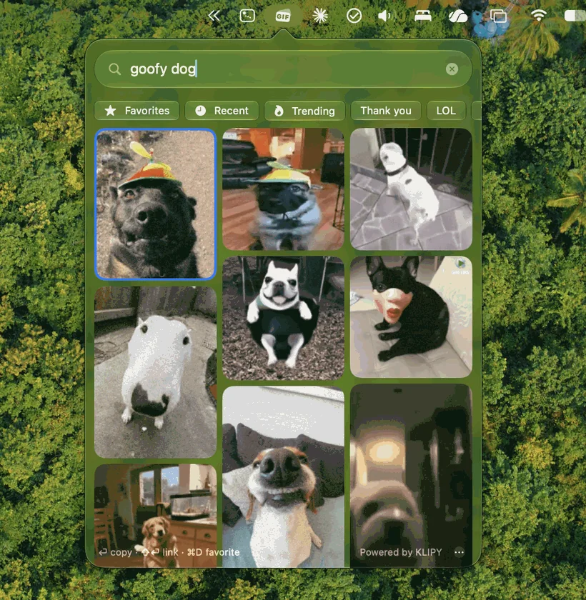
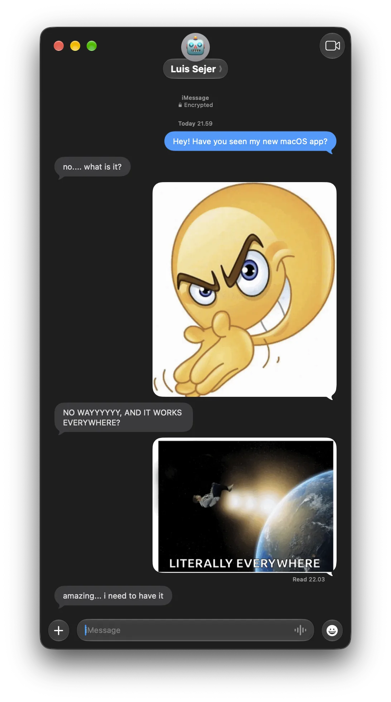

How it works
- ⌘⌥V Press the shortcut, from any app.
- Type what you’re feeling.
- Click the one that says it.
- Paste. That’s the whole thing.
The perfect reaction, one shortcut away. Search GIFs from your menu bar and paste them anywhere.
Try it. The demo on the right is live.
Free and open source · macOS 26 or later · Apple Silicon
An illustration of the app. Clicking copies the emoji, so paste it anywhere to see.
This is Snicker on a Mac, with real GIFs from KLIPY. The glass takes on your wallpaper, and a copied GIF pastes straight into the conversation.


Every chat app wants a GIF a little differently. Snicker puts two copies on the clipboard at once, the file and the image, so each app takes the one it understands, and the GIF arrives animated. Even in Microsoft Teams, where most GIF pickers fail.
It’s built in SwiftUI with Liquid Glass. You don’t sign up for anything, it doesn’t track you, and it stays out of your Dock.
curl -fsSL https://raw.githubusercontent.com/Luis-Sejer/snicker-gif/main/install.sh | sh
It installs Snicker and opens it. Run it again any time to update. Prefer clicking? Download the zip instead.
Yes. Teams only accepts a GIF pasted as a file, and Snicker always puts the file on the clipboard alongside the image data, so the GIF arrives animated.
Yes. Snicker is free and open source under the MIT license.
Apple asks developers to pay for notarization, and Snicker is a free side project that skips it. If you see the message, open System Settings → Privacy & Security, scroll down and click Open Anyway. You only do this once.
From KLIPY’s GIF library. Your searches go to KLIPY and nowhere else.
Macs with Apple Silicon running macOS 26 or later.
Open Snicker’s ⋯ menu and turn on Launch at Login.